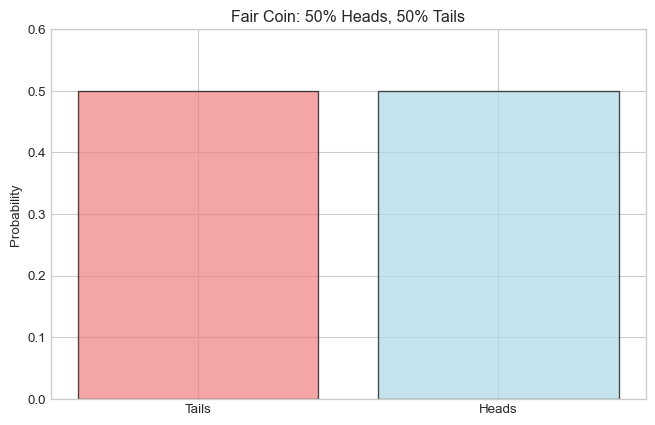
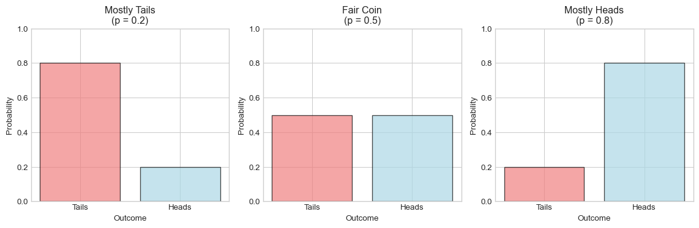
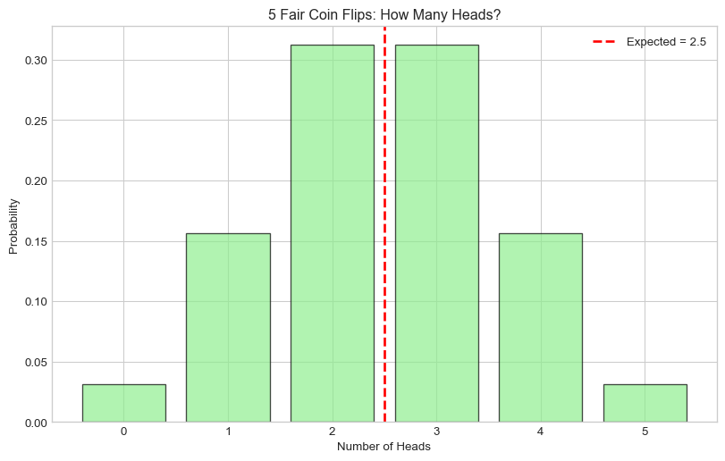
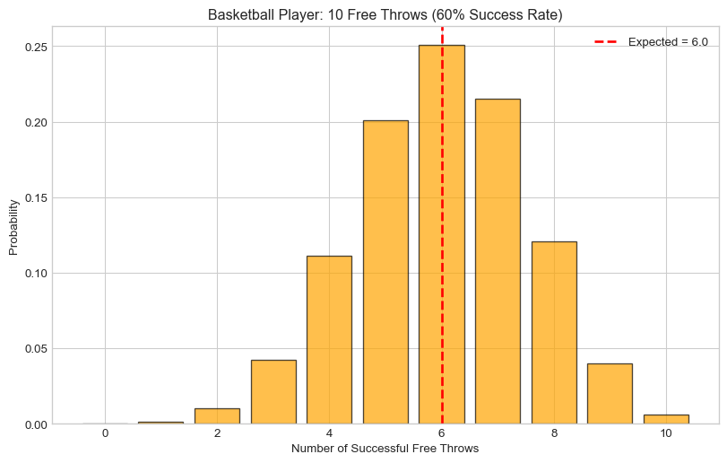
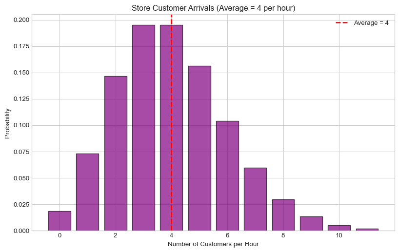
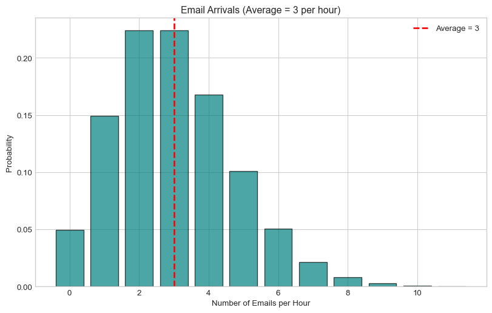

Lab 4 Solutions: Introduction to Probability with Python
PSTAT 5A - Summer Session A 2025
Author
Complete Solutions
Published
July 23, 2025
Getting Started - SOLUTION
# Load our tools (libraries)import numpy as npimport matplotlib.pyplot as pltfrom scipy import statsimport pandas as pd# Make our graphs look nice%matplotlib inlineplt.style.use('seaborn-v0_8-whitegrid')print("✅ All tools loaded successfully!")
✅ All tools loaded successfully!
Part 1: Understanding Probability with Coins - SOLUTIONS
Step 1: A Fair Coin
# A fair coin - just run this code!outcomes = ["Tails", "Heads"]probabilities = [0.5, 0.5] # 50% eachprint("Possible outcomes:", outcomes)print("Probabilities:", probabilities)print("Total probability:", sum(probabilities)) # Should be 1.0
Possible outcomes: ['Tails', 'Heads']
Probabilities: [0.5, 0.5]
Total probability: 1.0
# Make a bar chart - just run this code!plt.figure(figsize=(8, 5))plt.bar(outcomes, probabilities, color=['lightcoral', 'lightblue'], alpha=0.7, edgecolor='black')plt.title('Fair Coin: 50% Heads, 50% Tails')plt.ylabel('Probability')plt.ylim(0, 0.6)plt.show()

Task 1 Solution: Fill in the Biased Coin
# A biased coin that lands Heads 70% of the timebiased_outcomes = ["Tails", "Heads"]biased_probabilities = [0.3, 0.7] # If Heads is 70%, then Tails is 30%print("Biased coin outcomes:", biased_outcomes)print("Biased coin probabilities:", biased_probabilities)print("Total probability:", sum(biased_probabilities))# Check your answer: this should print 1.0
# Expected value calculation for fair coincoin_values = [0, 1] # Tails = 0, Heads = 1coin_probs = [0.5, 0.5]expected_value =0*0.5+1*0.5print(f"Expected value of fair coin: {expected_value}")
Expected value of fair coin: 0.5
Task 2 Solution: Expected Value of Biased Coin
# Expected value for biased coin# Values: Tails = 0, Heads = 1# Probabilities: Tails = 30%, Heads = 70%expected_biased =0*0.3+1*0.7print(f"Expected value of biased coin: {expected_biased}")
Expected value of biased coin: 0.7
print(f"This means: if we flip the biased coin many times,")print(f"we expect about {expected_biased} points per flip on average.")print(f"Since this is closer to 1 than 0.5, the coin favors Heads")
This means: if we flip the biased coin many times,
we expect about 0.7 points per flip on average.
Since this is closer to 1 than 0.5, the coin favors Heads
Part 3: Using Python’s Built-in Probability Tools - SOLUTIONS
Bernoulli Distribution Example
# Create a Bernoulli distribution for a fair coinfair_coin = stats.bernoulli(0.5) # 0.5 = 50% chance of success (Heads)# Ask for probabilitiesprob_tails = fair_coin.pmf(0) # pmf = "probability mass function"prob_heads = fair_coin.pmf(1)print(f"Probability of Tails (0): {prob_tails}")print(f"Probability of Heads (1): {prob_heads}")# Get expected value automatically!print(f"Expected value: {fair_coin.mean()}")
Probability of Tails (0): 0.4999999999999999
Probability of Heads (1): 0.5
Expected value: 0.5
Task 3 Solution: Biased Coin with Python Tools
# Create Bernoulli distribution for biased coinbiased_coin = stats.bernoulli(0.7) # 70% probability of Heads# Calculate probabilitiesprob_tails_biased = biased_coin.pmf(0)prob_heads_biased = biased_coin.pmf(1)print(f"Biased coin - Probability of Tails: {prob_tails_biased}")print(f"Biased coin - Probability of Heads: {prob_heads_biased}")print(f"Expected value: {biased_coin.mean()}")
Biased coin - Probability of Tails: 0.29999999999999993
Biased coin - Probability of Heads: 0.7
Expected value: 0.7
Answer: Yes, this matches what we calculated by hand in Task 2 (0.7)
Visualizing Different Coins
# Compare three coins with different biasfig, axes = plt.subplots(1, 3, figsize=(12, 4))# Three different coinscoin_types = [ {"prob": 0.2, "name": "Mostly Tails"}, {"prob": 0.5, "name": "Fair Coin"}, {"prob": 0.8, "name": "Mostly Heads"}]for i, coin inenumerate(coin_types):# Create the distribution distribution = stats.bernoulli(coin["prob"])# Get probabilities probs = [distribution.pmf(0), distribution.pmf(1)]# Make bar chart axes[i].bar([0, 1], probs, color=['lightcoral', 'lightblue'], alpha=0.7, edgecolor='black') axes[i].set_title(f'{coin["name"]}\n(p = {coin["prob"]})') axes[i].set_xlabel('Outcome') axes[i].set_ylabel('Probability') axes[i].set_xticks([0, 1]) axes[i].set_xticklabels(['Tails', 'Heads']) axes[i].set_ylim(0, 1)plt.tight_layout()plt.show()

Part 4: Multiple Coin Flips - SOLUTIONS
Example: 5 Fair Coin Flips
# Binomial distribution: 5 fair coin flipsn_flips =5# number of flipsp_heads =0.5# probability of heads each timefive_flips = stats.binom(n_flips, p_heads)print("Flipping 5 fair coins...")print(f"Probability of 0 heads: {five_flips.pmf(0):.4f}")print(f"Probability of 1 head: {five_flips.pmf(1):.4f}")print(f"Probability of 2 heads: {five_flips.pmf(2):.4f}")print(f"Probability of 3 heads: {five_flips.pmf(3):.4f}")print(f"Probability of 4 heads: {five_flips.pmf(4):.4f}")print(f"Probability of 5 heads: {five_flips.pmf(5):.4f}")print(f"\nExpected number of heads: {five_flips.mean()}")
Flipping 5 fair coins...
Probability of 0 heads: 0.0312
Probability of 1 head: 0.1562
Probability of 2 heads: 0.3125
Probability of 3 heads: 0.3125
Probability of 4 heads: 0.1562
Probability of 5 heads: 0.0312
Expected number of heads: 2.5
# Graph showing all possibilitiespossible_heads = [0, 1, 2, 3, 4, 5]probabilities = [five_flips.pmf(k) for k in possible_heads]plt.figure(figsize=(10, 6))plt.bar(possible_heads, probabilities, alpha=0.7, color='lightgreen', edgecolor='black')plt.xlabel('Number of Heads')plt.ylabel('Probability')plt.title('5 Fair Coin Flips: How Many Heads?')plt.axvline(x=five_flips.mean(), color='red', linestyle='--', linewidth=2, label=f'Expected = {five_flips.mean()}')plt.legend()plt.show()

Task 4 Solution: Basketball Free Throws
# Basketball free throwsn_shots =10# 10 shotsp_make =0.6# 60% chance of making each shotbasketball = stats.binom(n_shots, p_make) # Create the distribution
# a) What's the probability of making exactly 6 shots?prob_exactly_6 = basketball.pmf(6)print(f"Probability of exactly 6 makes: {prob_exactly_6:.4f}")# b) How many shots do we expect them to make?expected_makes = basketball.mean()print(f"Expected number of makes: {expected_makes}")# c) What's the probability of making 8 or more shots?prob_8_or_more = (basketball.pmf(8) + basketball.pmf(9) + basketball.pmf(10))print(f"Probability of 8+ makes: {prob_8_or_more:.4f}")
Probability of exactly 6 makes: 0.2508
Expected number of makes: 6.0
Probability of 8+ makes: 0.1673
# Create bar chartpossible_makes =list(range(0, 11)) # 0 to 10 makesprobabilities = [basketball.pmf(k) for k in possible_makes]plt.figure(figsize=(10, 6))plt.bar(possible_makes, probabilities, alpha=0.7, color='orange', edgecolor='black')plt.xlabel('Number of Successful Free Throws')plt.ylabel('Probability')plt.title('Basketball Player: 10 Free Throws (60% Success Rate)')plt.axvline(x=expected_makes, color='red', linestyle='--', linewidth=2, label=f'Expected = {expected_makes}')plt.legend()plt.show()

Part 5: Events Over Time - SOLUTIONS
Example: Store Customers
# On average, 4 customers enter the store per houraverage_customers =4store_customers = stats.poisson(average_customers)print("Store customer arrivals per hour:")print(f"Probability of 0 customers: {store_customers.pmf(0):.4f}")print(f"Probability of 2 customers: {store_customers.pmf(2):.4f}")print(f"Probability of 4 customers: {store_customers.pmf(4):.4f}")print(f"Probability of 6 customers: {store_customers.pmf(6):.4f}")print(f"\nExpected customers per hour: {store_customers.mean()}")
Store customer arrivals per hour:
Probability of 0 customers: 0.0183
Probability of 2 customers: 0.1465
Probability of 4 customers: 0.1954
Probability of 6 customers: 0.1042
Expected customers per hour: 4.0
# Graph customer arrivalspossible_customers =list(range(0, 12)) # 0 to 11 customersprobabilities = [store_customers.pmf(k) for k in possible_customers]plt.figure(figsize=(10, 6))plt.bar(possible_customers, probabilities, alpha=0.7, color='purple', edgecolor='black')plt.xlabel('Number of Customers per Hour')plt.ylabel('Probability')plt.title('Store Customer Arrivals (Average = 4 per hour)')plt.axvline(x=average_customers, color='red', linestyle='--', linewidth=2, label=f'Average = {average_customers}')plt.legend()plt.show()

Task 5 Solution: Email Inbox
# Email arrivalsaverage_emails =3# 3 emails per hour on averageemail_arrivals = stats.poisson(average_emails)
# a) Probability of getting exactly 3 emails in an hourprob_exactly_3 = email_arrivals.pmf(3)print(f"Probability of exactly 3 emails: {prob_exactly_3:.4f}")# b) Probability of getting no emails (quiet hour!)prob_no_emails = email_arrivals.pmf(0)print(f"Probability of no emails: {prob_no_emails:.4f}")# c) Expected number of emails per hourexpected_emails = email_arrivals.mean()print(f"Expected emails per hour: {expected_emails}")
Probability of exactly 3 emails: 0.2240
Probability of no emails: 0.0498
Expected emails per hour: 3.0
# Graph for email arrivalspossible_emails =list(range(0, 12)) # 0 to 11 emailsprobabilities = [email_arrivals.pmf(k) for k in possible_emails]plt.figure(figsize=(10, 6))plt.bar(possible_emails, probabilities, alpha=0.7, color='teal', edgecolor='black')plt.xlabel('Number of Emails per Hour')plt.ylabel('Probability')plt.title('Email Arrivals (Average = 3 per hour)')plt.axvline(x=average_emails, color='red', linestyle='--', linewidth=2, label=f'Average = {average_emails}')plt.legend()plt.show()

Part 6: Distribution Detective - SOLUTIONS
Task 6 Solution: Which Distribution?
# Scenario A - 8 coin flips, exactly 5 headsn =8# number of flipsp =0.5# probability of heads (fair coin)scenario_a = stats.binom(n, p)answer_a = scenario_a.pmf(5) # exactly 5 headsprint(f"Scenario A answer: {answer_a:.4f}")
Scenario A answer: 0.2187
# Scenario B - Coffee shop customersaverage_rate =6# customers per hourscenario_b = stats.poisson(average_rate)answer_b = scenario_b.pmf(4) # exactly 4 customersprint(f"Scenario B answer: {answer_b:.4f}")
Scenario B answer: 0.1339
# Scenario C - Student homework problemp_correct =0.8# 80% chance of getting it rightscenario_c = stats.bernoulli(p_correct)answer_c = scenario_c.pmf(1) # gets it right (value = 1)print(f"Scenario C answer: {answer_c:.4f}")
Scenario C answer: 0.8000
Part 7: Simple Simulation - SOLUTION
# Simulate flipping 10 fair coins many timesnp.random.seed(42) # This makes everyone get the same "random" results# Our setupn_flips =10p_heads =0.5n_experiments =1000# We'll do this 1000 times# What does theory say?theory = stats.binom(n_flips, p_heads)theoretical_prob = theory.pmf(5) # exactly 5 headsprint(f"Theory says P(exactly 5 heads) = {theoretical_prob:.4f}")# Now let's simulate itcount_5_heads =0for experiment inrange(n_experiments):# Flip 10 coins flips = np.random.binomial(1, p_heads, n_flips) num_heads =sum(flips)if num_heads ==5: count_5_heads +=1# Calculate what we observedobserved_prob = count_5_heads / n_experimentsprint(f"Simulation says P(exactly 5 heads) = {observed_prob:.4f}")print(f"Difference: {abs(theoretical_prob - observed_prob):.4f}")print("Theory and simulation should be close!")
Theory says P(exactly 5 heads) = 0.2461
Simulation says P(exactly 5 heads) = 0.2680
Difference: 0.0219
Theory and simulation should be close!
Summary of All Answers
Task Answers Summary:
Task 1: Biased coin probabilities = [0.3, 0.7]
Task 2: Expected value of biased coin = 0.7
Task 3: Bernoulli(0.7) gives same expected value = 0.7 ✓